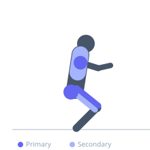
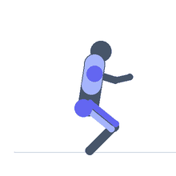

Exercise guide / Battle Rope Waves with Lateral Shuffle
Battle Rope Waves with Lateral Shuffle
A dynamic battle rope conditioning drill in which the exerciser performs alternating rope waves while simultaneously shuffling laterally (side to side). The lateral shuffle adds lower body agility, hip abductor, and hip adductor demands to the standard battle rope work, making this a true full-body conditioning exercise. Used in sports conditioning, metabolic circuit training, and functional fitness programming.
Primary muscles
gluteus medius
deltoid anterior
rectus femoris
Secondary muscles
trapezius upper
adductor magnus
Stabilizers
transverse abdominis
Equipment
No Equipment (Bodyweight)


Starting position
- Hold one end of a battle rope in each hand. Begin in an athletic stance (slight squat, knees soft) and start alternating arm waves.
Setup
- Ensure adequate side-to-side space (3-5 meters). The rope must be long enough to allow lateral movement while maintaining wave mechanics.
Steps
- Step 1: Begin alternating arm waves from the starting position.
- Step 2: While maintaining the rope waves, shuffle laterally to the right for 3-5 steps.
- Step 3: Without stopping the waves, shuffle back to the left for 3-5 steps.
- Step 4: Continue alternating directions for the prescribed interval.
Coaching cues
- Keep the waves going during the shuffle — that is the whole challenge
- Stay in the athletic position — bent knees, chest up
- Quick feet during the shuffle, but do not sacrifice wave quality for speed
Breathing
- Breathe continuously and rhythmically. The demand is high — do not hold the breath.
Range of motion
- Shuffle distance depends on rope length. Maintain wave quality throughout the entire shuffle distance.
Tempo
- 30-60 second work intervals. Shuffle speed dictated by wave quality — not so fast that waves collapse.
Common mistakes
- Stopping the waves to shuffle — the waves must continue during the lateral movement
- Crossing the feet during the shuffle — use a true lateral shuffle pattern (no crossover)
- Standing upright during the shuffle — stay in the athletic squat stance
Safety
- Ensure the floor is clear of obstacles in the shuffle path
- If the rope cannot maintain wave mechanics during the shuffle, reduce the shuffle speed
Training
- endurance: 1–5 reps
- endurance: 2–5 sets
- Rest: {'endurance': 60}